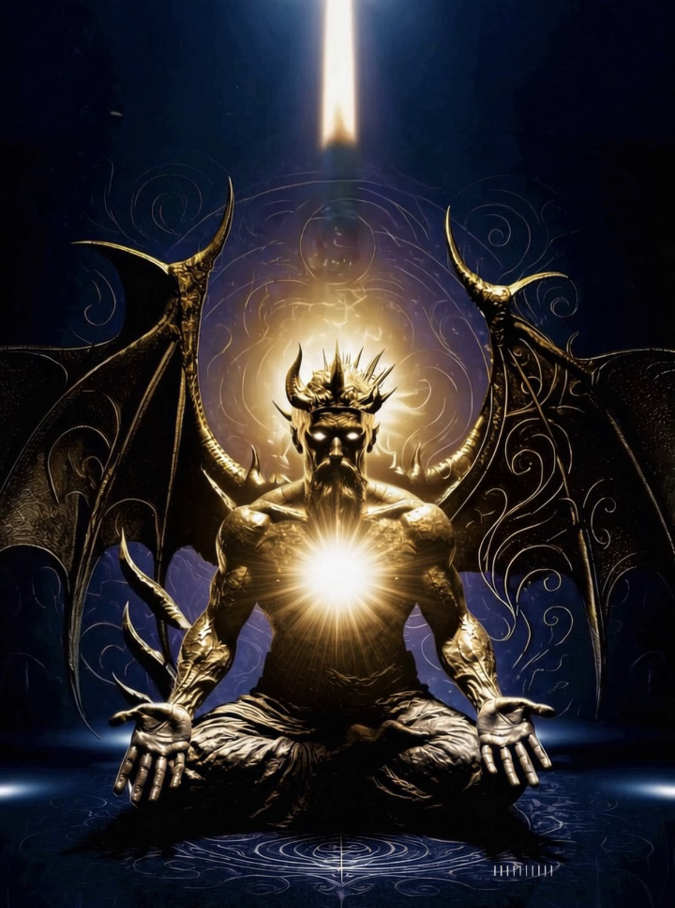

エーテルダブルの構築
自分自身を精密に観察し、ここに降ろす
永遠の自己存在
この人格の背後にある、変わらないもの

エツ・ハ・チャイム
万物の構造を映す鏡
ここは汝の聖なる空間
精密に構築し、そこに入る
21柱レムリアンシード配置図 — 身体を神殿とする
6本 ・ 半径1.5m ・ 六芒星
ポイント外向き
六道を浄化し結界を張る
スモーキーは北（大プルバ側）に
6本 ・ 半径1m ・ 30°回転
ポイント天向き（立てる）
外+中で12頂点＝黄道十二宮
天地を繋ぐ光の柱
6本 ・ 半径50cm ・ 六芒星
ポイント身体に向ける
神のエネルギーを直接導く
受容と変容の場
3本 ・ 正三角形 ・ 至近
ポイント天向き（立てる）
仏・法・僧 / 父・子・聖霊
ブラフマー・ヴィシュヌ・シヴァ
素材：隕石（ナムチャク）10個 ＋ テルマ石
天鉄と埋蔵聖物の融合
手のエネルギーを制御する
親指を中に入れて握る。他の4指で親指を包む。両手。
密教の最も基本的な封印。歩行中、電車、仕事中 — いつでも使える。気の漏出を即座に止める。
両手の指を内側に組む（指先が手のひら側に入る）。
エネルギーを外に出さず体内循環させる。閉じた回路を作る。
両手をお椀にして重ねる（右上・左下）。親指の先端同士を合わせる。
「瓶に蓋をする」。エネルギーを容器に閉じ込め、修行中に蓄積する。神殿での瞑想時に最適。
右手を膝から下に向けて地に触れる。
余剰エネルギーを大地にアースする。漏れではなく意図的な放出。釈迦が悟りの瞬間に結んだ印。プルバの接地と同じ原理。
※ 神々を降ろす器として、完全に閉じるより「制御」が重要
手のチャクラ（労宮）は受信と放出の両方に使う
レッドドラゴンボディ — クンルンネイゴン
身体を器として開く
三つの段階を通じて意識体を構築する：
グルリンポチェ（パドマサンバヴァ）→ チベット・ニンマ派創始者
ブータン女王との関連
マオシャン（茅山）道教の伝統
手を逆さまにして地面に水平に。目は開く。
3分の2を鼻から吸って口から：
→ ゆっくり呼吸
NUURの呼吸：ン・ウ・ア・イ
蝋燭を吹くように吐き、9秒止める。人差し指。
火と至福のエネルギーと共に。
鼻を小指で摘んで、目を中指で頭の方に押す → 光が見える。耳を閉じる。
風の伝統。マイクロコズミックフローを逆に回す。
洞窟呼吸を用いた深い瞑想状態。鼻→口→9秒止める。
全ての修練の集大成。洞窟内で集中的にプラクティスを行う。
意識が頭にあるとき → 交感神経（緊張）優位。肩・首が固まり、呼吸は浅く、未来の選択が不安寄りに。
意識が足に落ちてグラウンディングが深くなると → 副交感神経（回復モード）→ さらに深まると迷走神経がON
潜在意識からの通信
忘れる前に、ここに降ろす
降ろしたものの軌跡